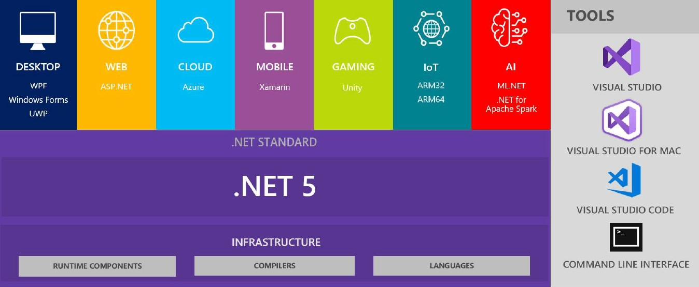

TOC
.Net 5 Thoughts
As .Net5 is just around the corner scheduled release at .Net Conf 2020 which is November 10-12 I thought I would write a bit about my thoughts and what I have found about the up coming changes.
Now these are my thoughts (Hence the name!) but is based on Docs/Blogs/Podcasts/Meet-ups from Microsoft Team members but for the best and latest news take a look at the .Net Downloads Page for the latest release notes and roadmap.
.Net Currently
At the moment .Net as we call it is made up of lots of different parts as I am sure you know, we have the Framework currently 4.8.2 as well as Core 3.1 but we also have other parts along for the ride like Mono which is used by Xamarin to bring .Net to Mobile and IoT boards like Wilderness Labs Meadow (Very cool go take a look I’ll wait here…)
if your wondering why its lots of parts well Framework is the original Dot Net and core is its sibling built make Dot NET more cross platform. Mono.Net was gained by Microsoft when they purchased Xamarin in 2016 so lots of balls for the Dot NET team to juggle.
What is .Net 5 then?
Well it’s being pushed by Microsoft as .Net Core vNext so the next iteration of Core but with additional Framework API’s and the best parts of Mono brought in as well like the Mono AOT Compiler and the ability for your app to target other platforms like Mobile, Mac/IOS, Linux and even Web Assembly via Blazor. They are also adding new API features especially in CoreFX and Arm64 support.
This means that if your next project is Net5 it can truly run anyway from Desktop to Mobile even IOT how cool is that… All while using your favourite developer IDE and tooling.

Net5 preview 8 released August 25th 2020 and is planned to be the last preview release as after all we are getting close to November so expect an RC along soon.
These .Net5 beta releases also include the new toys of C#9 and F#5 and the Microsoft team have said that this latest release is feature complete so it’s just bugs and performance tuning before we see RC1.
Why is it called .Net5 and not .Net Core 4
Well as there is the full fat Framework 4.8.X already and the plan was to replace this for new projects with the new vNext of core they have skipped the number 4 and gone straight to 5, which makes sense and stops all the confusion of .Net 4 and not knowing if it was Core or Framework. Yes..Yes I know there was a .Net Framework 3.X but I’m not the one deciding this and anyway it makes sense to me so I’m happy.
So whats happening to Framework 4.8.X
This I think is the clever part by Microsoft as they have decided to leave it alone and only patch it for Security fixes, so it’s not getting any of the new performance tweaks or toys but it’s stable so why rock the boat. Also, Framework is used by a lot of Enterprise and is baked into Windows 10 and on the release cycle with Windows which means this decision gives stability and allows backwards compatibility of all the legacy Apps out there.
This means if your App is currently targeting Framework and your just in support mode or making minor tweaks the recommendation is to stay there and carry on nothing to see here thanks for reading this far.
However if your Project is .Net3.1, your starting a new project or you want to make bigger changes like moving to the cloud, adding Microservices… OR just maybe your feeling it’s time for that Big Re-Write (in which case watch this first ;-) Turn the volume up.)
But If I Switch how do I target Windows Registry or WPF
If your starting a new project and you really do want/need to target some part of windows that is specific like using existing skills to build a new WPF app or you need to read/write to the registry well you can still do that with .Net 5.
The same goes for if you want to target some special element of say Linux, Tizen, MacOS etc all you do is pull in the NuGet for that specific part so for example to build a Windows WPF app you grab the Windows Desktop NuGet and carry on as you were.
This does mean that pulling that specific NuGet your app is now taking a dependency on that OS and is no longer cross platform but if your doing this you really don’t care and that is the beauty of the .Net set-up going forward.
I’m Sold how do I switch?
The plan as I understand from Microsoft is that switching from Core 3.1 to .Net5 is going to be as simple as a change to the .csproj and looking at the Beta releases it looks like they are sticking to this other than a few edge cases like WinRT. But this is still Beta so you might want to check the release notes before switching.
But lets say your ready to switch, head into you .csproj and where you see the Target Framework Moniker (TFM) NetCoreApp3.1 you simply change this to net5.0
Even better if your planning to target Windows specifically you can also add to the TFM so that it targets that specific OS which means you can use
net5.0-windows
net5.0-windows10.0.17763 <- Targets that specific release.
These TFM’s will grow with the move to .Net 6 November 2021 when Xamarin is fully integrated (More on that in a moment) and things like below will be possible:
net6.0-ios
net6.0-android
net6.0-ios14
These will all be possible and the full list I have not found yet but would be interested if you stumble upon it.
Whats happening to .NET Std2.0
Net STD 2.0 is kind of disappearing in a way or at least feels like its going to fade into the background as Net5 is fully Cross Platform so anything that targets Net5 works everywhere unless of course you take a NuGet dependency like above. So, all Net5 Library’s will run in all Net 5 projects this makes Standard kind of redundant going forward.
How is Support going to work?
.Net 5 will become Net Current so not LTS and Net 6 will be the LTS release. Going forward .Net will be released every November and all Even numbered releases will be LTS so your support will be for those releases. As .Net 5 is not LTS this means when .Net 6 is released in November 2021 you have 90 days to move over for support. If you want to check the support for any of the releases they can be seen here
If your project is currently targeting .Net3.1 this is LTS so no need to panic as you will continue getting support until .Net 6 releases.
Tooling
Is VS19 changing well I don’t know other than the normal release cadence, but there is talk of VS19 being updated at the same time and this makes sense as the tooling will change to support things like Xamarin moving to MAUI (again more on this in a bit). It could also get a bump to VS21 as it has seemed in the past to happen every 2 years. VS15/VS17/VS19 etc so makes sense to bump to VS21. But if you’re not a VS19 user don’t fret VS4Mac and VSCode are both getting updates to allow you to target Net5 as well. ;-)
OK what about Xamarin and whats this MAUI thing?
Xamarin is planned for a name change which we all expected after the purchase, so the branding police are happy.
the name picked is MAUI which stands for Multi Platform App UI and yes I didn’t think its a great name either buts its grown on me plus they have picked it already so get used to it as its here to stay.
Why the change well Xamarin is in the .NET5 to .NET6 wave which means somewhere in-between them it will be moved into the BCL. Why is this well it’s not going to ship with Net 5 in November due to C19 causing delays but is part of the Net5 to Net6 wave which means between Nov20 to Nov21 as say Net 5.x release but is promised to be there by .NET6
Current Xamarin.Forms
Xamarin.Forms 5.0 is just in Beta release and this will be the last major release of Xamarin.Forms before the move to MAUI, there will be point or minor releases every 6 weeks as normal until .Net6 releases and then support for Xamarin.Forms will continue for 1 year until November 2022 so you have time to make the switch.
BCL Integration
Xamarin is not just changing its name but it will also no longer be a separate project but become part of the .Net Base Class Library (BCL) just like System. Xamarin.Forms becomes System.MAUI and Xamarin.Essentials becomes System.Devices so installed as Workloads or via NuGets initially is what I believe is the plan until .Net6 when it will be fully baked in.
MAUI (get used to it!) will continue to release on the same 6 week cadence as Xamarin.Forms currently does, it’s still Open Source with a repo here and the same great team behind the scenes. So initially it’s just a Name change and integration into the BCL, but there will be some breaking changes as the team take the opportunity to fix up some old scars.
What about Xamarin.IOS and Xamarin.Android?
Xamarin.IOS becomes .Net for IOS and Xamarin.Android becomes .Net for Android nothing changes with these other than the name as they are the SDK’s shipped from Apple/Google and to target these directly you will be able to set the Target Framework in the .csproj to net6.x-ios and net6.x-android as shown earlier they are even looking to support OS specific releases using a TFM of say net6.x-ios14.
New stuff with MAUI
MAUI becoming part of the BCL and closer integration with .NET means the team can add some new toys and one of these is the addition and support for not just MVVM and XAML as we have now but a new MVU or Model-View-Update pattern using Fluent C#.
There are many discussions on other things to add and change in the move and these are all happening on the MAUI Repo so head over and take a look.
Final Thoughts
Well really there is not much we can do it’s coming and it’s the future so get onboard is the message, but for me the fact that it’s a big unification of all these parts of Dot Net and cleans up all the different projects is great news. Soon if you’re a Dot Net developer you can truly say that you can write code that can target anything from a Windows Box to the Cloud, from Mobile to the XBox and even IOT all using existing skills and knowledge. That for me is the exciting thing, I’ve been doing Mobile and IOT work for a number of years now as they are areas I know and Love but now any developer that knows Dot Net can target ALL the things…
Covid (Yes that had to be mentioned!) has messed up some of the timings of the project as MAUI was supposed to be part of .Net5 release and is now pushed to the 5->6 wave which means somewhere in the middle of the two, but I feel this will give the various teams more time to do it properly rather than it being rushed to meet a marketing deadline and that is a great decision.
I hope you got something from my thoughts on the new Hotness and I will continue to blog and speak on the subject as more info comes out from the teams, but for now…
Happy Coding!